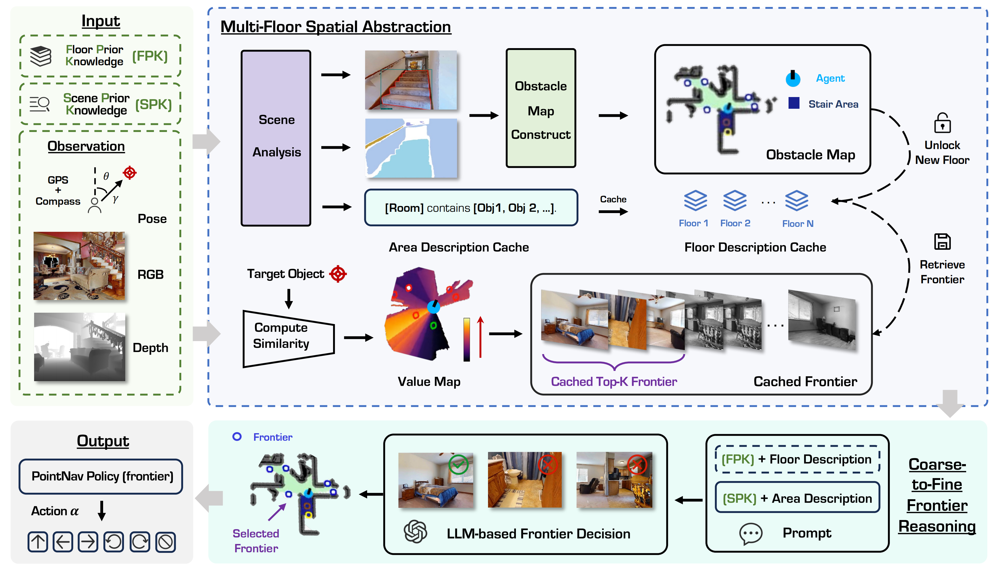
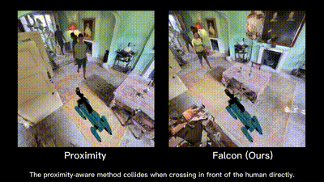
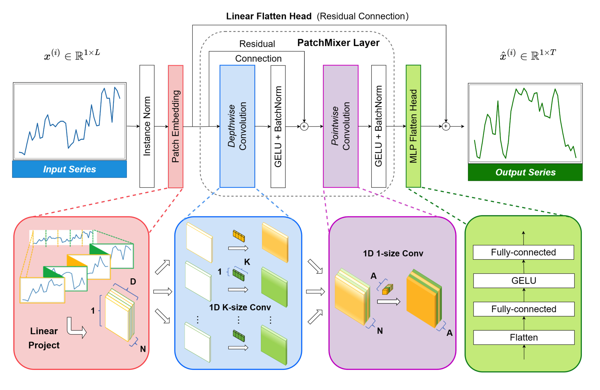
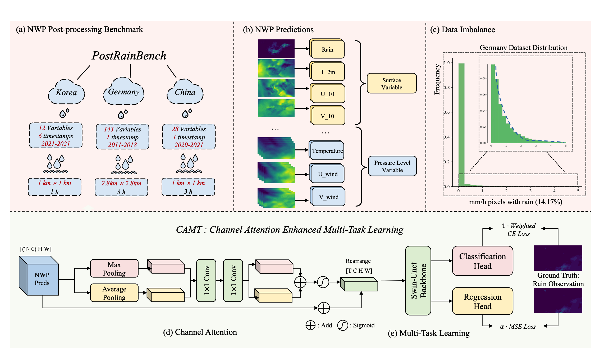

Zeying Gong
Zeying is a Ph.D. student in Artificial Intelligence major at the Hong Kong University of Science and Technology (Guangzhou), under the primary supervision of Prof. Junwei Liang, and co-supervision of Prof. Yingcong Chen.
During his master's studies, he was co-supervised by Prof. Liuqing Yang.
Before embarking on his research journey, Zeying spent over a year as a 5G network engineer at Huawei. There, he served as one of the technical leaders for the delivery of High-speed Railway 4G & 5G base station project in Jiangxi Province. He was also involved in the technical development of MetaAAU and the ultra-long coverage features of 700M antennas. He earned his Bachelor's degree in Electronic Information Science and Technology from Sun Yat-sen University, supervised by Prof. Bin Rao.
His current research interest is Embodied AI, especially Social Navigation.
News
| May 2025 | Attended ICRA'2025 in Atlanta, USA -- a great experience! |
|---|---|
| Jan. 2025 | One paper accepted to ICRA'2025 [Project Homepage] |
| Aug. 2024 | Attended IJCAI'2024 Workshop in Jeju Island, South Korea -- a nice trip! |
Publications
-
Ascent Falcon PatchMixer PostRainBench 